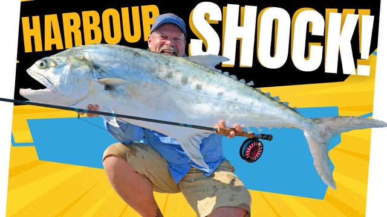

Starlo Gets Reel
Darwin's best kept fishing secrets
Friday 18 October 2024
Starlo Gets Reel
Friday 18 October 2024


Originally broadcast on Starlo Gets Reel. Watch on Starlo Gets Reel.
The city itself is situated on the shores of Darwin Harbour, a vast tidal system with numerous extensive arms and feeders. Not surprisingly, it's a popular playground for fishos. I have fond memories of fishing on Darwin Harbour, especially during my 3 years living in the Top End from 2009 until 2012. While it's not always the easiest of waterways to come to grips with, it certainly has its rewards, especially for those willing to put in the time and effort needed to learn its nuances.
I experienced some great fishing on and around the harbour through those years. And I was able to share some of this with mates from down south. Everything from Barra to Tuna, Queenies to Trevally, and local highlights, like those lime peeling milkfish. But I guess the catch that burns brightest in my memory banks is the world record fly rod queenfish that I was lucky enough to hook and land there in June 2012.
It's a record and a personal best that I very much doubt I'll ever beat. In September 2024. I was lucky enough to be invited back to Darwin to fish with a good mate who owns Barefoot Fishing Safaris. It was wonderful to be back out on the harbour, headed for some fly fishing spots, and especially satisfying to be sharing it with fellow flyfisher and friend Steve Peach of the Peachy Fly Fishing Channel on YouTube.
We were both there as guests of Glenn Watty Watt, whose Barefoot Fishing Safaris has become one of the most respected guiding businesses in the territory. What he knows these, sometimes fickle waters better than most, and he was taking us to some tidal flats. All right, let's go. Peachey and I were excited and full of anticipation.
So what happens is they've got to come out. They get right back in there. on the high tide. What, you hear them going, boof, boof, boof, way back in the trees.
Yeah, yeah. And then as the tide drops, they've got to come out, and then they kind of stage on these trees out the front. You have a cast, mate? I'll just have a cast to get my line straightened out. I've got enough string to play the game.
That's the sort of place they love where there's, like, that three way route system thing that'll get in underneath that. So, mate, when we spot these fish, we got to lead them by a little bit. We want to pull off right on the nose. When they're moving between shady patches.
Let's give them half a metre or so lead. If they're sitting still beside a stick or one of these little shrubs, we just put it right on their nose. They most likely be just parked up beside these small mangroves in the sticks, branches that are dipping into the water. You got to put it right on them then.
Okay. Because they're sort of not so much actively hunting around a lot. Just sort of sitting in there, not moving. Yeah. But once they get cruising, that's when you do need to lead them a little bit. Yeah, okay.
Colour changes are also happy hunting grounds. So you reckon they like to sit right on the colour line and Yeah, they'd be in it. The dirty water. But move in and out of it.
They love the corners. So if you just want to blind cast at a corner, something coming down. Yep. The flat, under the leaves. Go for it.
Yep, he's on it. Oh, no, you lined him. I did? Yeah.
He saw your line in the air. Oh shit. These fish are super alert and easily spooked in the shallow, clear water. Accurate casts are important too.
Look at all those little Trevors in there. Huh? You got him. Here we go. Not the target species, of course.
These mates are trying to eat him as he comes in. Better be the opposite of a giant crevally, wouldn't it? Well, it's a start. Is it worth sort of peppering the shade here, mate?
Peer right in amongst those mangroves. They like, they swim right in amongst them. Oh, there. They're there, there.
Yep, that was on my plot. No, he wasn't on my flight. He just came up for a look at us, I think. He was a good fit.
He was a nice fish. hit the motor. That's what I was saying. He was sitting in that drain and you can't see him.
No, only there's like 5 centimetres of milky water in the bottom of them. There he is coming out at us, big one. Yeah, he was a good fish. 70 or something?
Yeah, it was the 70s something. Yeah. In the clean water before this. I see him.
We were getting our shot, but we just weren't converting them. on other things. You see it? Yeah, yeah, you had to go.
Came and had a crack, but he didn't didn't quite find the point of the hook. Oh, big fish going fast. I'll have a crack, it's a queenie. Yep.
Nice shot. Oh, he's on it. He's on it again. Let's go.
Yeah, you got him. Nicely done, mate. You wouldn't say that that was a trout strike 2 times then, would you? Stop it.
Trout striking. It's a hard habit to break. Nice job. Good stuff, mate.
Thank you. Mind if I have a cast out? No, no, go for it. Yeah, I've caught a bigger Queenie in Darwin Harbour. actually, yeah.
This one would have been good bait for him. They're great fish at any size and perfect for the fly. This one didn't quite get me into the backing, but it went close. Your flies work.
Peachy. Good. That's good, mate. Let's see a little squid.
As we got the queenie closer to the boat. We discussed trying to get some underwater footage. Yeah, don't go to underwater just yet, though. You want to take us down, I'll get us in. Yeah, that'd be the go.
But of course, you should never count your queenies until they're in the boat. They're masters at throwing the hook. Yeah, you can go underwater now, probably. I'll get on, mate.
Oh, it's all right. 's off. I got all that. Not to worry, the day was young, and we knew there'd be more chances.
It was just a matter of covering water as the tide dropped out of the trees and onto the flats. Worth popping one in there. Peachy up where that bit of dirty water is weather. The drain makes a bend.
Couple of brim up on the flat there. He's a good brim. Oh, yeah? Come back.
Don't go up in there, you mongrel. Easy. Nice, bro. Nice class, mate. He's seen it.
He's on it. He on it. He's on it. Come on, don't play with your food.
Yeah, nice one, Steve. Fair him. Good broom. Gotta get him angry.
Got him angry. You did your chunk. Little Mr. Pikey. Pikey brim are prolific in Darwin Harbour, especially through the dry season.
Not what we're after, but still good fun. A bit of movement up in there. Oh, yeah. This last part of the runout tide is prime, especially around any creek mouths and inflows.
Nice. Yeah. Yeah, I'm getting hits. Oh. I think there's a school in there, mate.
Yeah, there is a school in there. I don't know what they are. Yeah, more kids. There.
That'll be a little snapper, is it? Yeah. Or biking, is it? Golden snapper.
Finger mark, yeah. Golden snapper. Yeah, there'll be a few of them. there'll be a bunch of those in there.
This last branch, you... Yeah right. There it is. Finger mark?
Oh, yeah, yeah, he's got mates. Yep, there's a school in there. Usually catch about five of them and then they'll stop. Yep.
They talk to each other. Kissing cousins of the mangrove Jack, finger mark, or golden snapper, are great fish, and they grow a lot bigger than this. Oh, come on. Yep.
Might pull the barbs back out on those hooks. Wait until you get out of it further, and I'll drop mine in. All right. Yep.
Got him. Yeah, don't even. Do a good one, don't they? The first one wouldn't be bad.
That's a javel on this one. Oh, right. Another species. Yeah, right.
Oh. Come on. Oh, oh, oh. Yeah.
Look at them all. Look at him all with him. I wonder why they call them Grunter. Starlo's on.
Yours a finger mark, mate? Yeah, drop your fly in there. This other finger mark trying to take the fly out of his mouth. Yeah.
Shoot it in there and get it down, you go. Yeah. They go back into that dirty water. Couple of them, you'd have a sandwich.
Yeah. I was pushing back a bit so you get a bit better angle. Might be starting to wise up to us. I'll go down here, so you've got a little bit more... Yeah, I'll be in the corner up there, Queenie, you reckon?
Yeah. You'll probably come down here. They might have wised up. Yeah. You got the runt of the litter.
What is that, fella? That's another javelin. Little javelin. How cute.
They good chill when they're a bit bigger, though. Oh yeah. Yeah, really nice. That had been a fun little interlude, but we had bigger targets in mind, and what he pushed us further up the creek. The tide was really dropping out now, forcing bait fish and predators alike out onto the flats.
If we were going to score a barra or a threadfin salmon, it'd most likely be in the next 40 minutes to an hour. And sure enough, the barrow were already boofing. That's Barrow. It was starting to happen.
Is that salmon? And with the barr and salmon, obviously starting to hit baked fish right on the surface, Peachy and I both switched to floating top water fly patterns. This is a really exciting way to fish. Near the bottom of the tide, any small drains and runoffs that are still spilling water into the main channel become hot spots, and this is where we were focussing our attentions. With nervous bait rippling and the odd predator smashing into it, it seemed like only a matter of time.
Oh, look at him. It's gone to the left. And sure enough... Still there.
He's on it. Success at last. I'd finally pinned a small barra. Now I just needed to stay connected.
Even at this size, they're great fighters on fly gear, and they love getting airborne, often shedding hooks in the process. I think Watty was pretty keen to see us put one in the boat, and he wasn't the only one. It's important to keep a tight line and steady pressure. Any slack is likely to see the barrow shake the hook.
They're master escape artists. They're such great fish. No wonder they're an Aussie angling icon. They're just the perfect sport fish in my book.
You can't rush things. Yes. Cream up, talking to. Like a barrel, only smaller.
Yeah. I don't know if you can see in there, but that little fly is in the roof of his mouth way back down the hatch. Grab some fliers. What is?
Only a small fish, but they're just beautiful at any size. Yeah. They've been hard to come by. There's plenty there.
They're just not always easy to catch. Makes it doubly rewarding when you do get my love. All right, I'll give him a bit of a swim, send him on his way. It pays to give them a few moments to recover before releasing them.
Biting down on my thumb. But you don't want to keep your hands in that water, you, any longer than necessary. As is so often the case, once you crack a successful pattern, it doesn't take too long to repeat it, and I was straight back into the action. Yes.
Another feisty little harbour barra on the surface fly, maybe even a tad larger than the 1st one, although not by much. Little bit bigger. Barramundi of all sizes are encountered in Darwin Harbour, but these smaller males in the 40 to 75 centimetre range are by far the most common, especially on the shallower edges that we were targeting. And today they seem to be responding best to a surface fly worked quite violently and aggressively.
Don't worry, I'll be trying a bit of that. Bit of that action. Yeah, a little bit. A centimetre.
Here he goes. Not quite as well hooked, this one. Lovely looking fish, and not done yet. They always seem to save a little bit until the end game.
You can't count them until they're in the net. Why didn't you jump? Oh, yeah, he's a little bit good. Here?
Cheers, mate. Got him. You miss tiny stripe, you can be whipped. Because I was ripping it so much.
Yeah. These couple of centimetres longer. He'd be getting very close to legal, wouldn't he? Yeah, probably 53.
Mm. You want to pop that over there? Okay. Simple as it was. Gorgeous fish.
They just chrome when they come out of the salt water like this, and most of them have that yellow tail, quite often, with the dark meat at the bottom like that. Again, a quick swim to revive the fish before release, but as always, minimising the time I spend with my hands in the water. Nice. Although it cracked a pattern, the windows of opportunity don't stay open for long in the top ends big tides.
The runout had finished now, and with it, that frantic interaction between prey and predators. It was basically all over here. So what he made the decision to head out into the deeper water of the harbour entrance and see if the newly making tide was carrying any pelagic action. Good mob over there, Woody. They've spotted them.
It didn't take us and the other boats long to find birds and feeding fish. A fast moving mixture of small mackerel and queenfish busting up on bake fish. This should be fun, if we can get a fly in front of them, and then move it fast enough to elicit a feeding response. Oh, it was cool seeing I'm all swimming around like that.
Yeah. Oh, look at the Mac, he's just cruising here. Yeah, yeah, they're all right here. Oh, my goodness.
Double handed stripping's a great way to generate a bit of extra speed. Sight cast and max in BMM metres. That's that. That's it.
Here he goes. Here he comes. That what he wants. That's what he wants.
That's what he wants. I'm running out of water. Look at them all there. As we were quickly discovering, seeing these fish and catching them are two different things.
Yes, yes. Whoa, whoa. Come on, come on, Edith. All right. Keep moving.
That microsecond where you lose your life. Yes. Yep. Well done, Peachy.
Nice job. Make it a double. What do we want me to do with this one, Glenn? Just lift him in. I'm going later, mate, if you like. Yeah, I was gonna say, I don't think you're there yet.
Oh, big shark. Big shark. All right, mate, incoming. Oh, I don't think you've quite got him at bleeding stage just yet.
The presence of a couple of big whaler sharks certainly adds a bit of urgency to the equation. Peachy knows that he's got to get his little mackey past the tax men if he's going to land it. There is. Oh, shit. Big shark.
Being in his life? That was a shark. Right up his bum. Good size shark, eh, mate?
Here we go. Beautiful. Yeah, the sharks aren't. The macrel?
You know, it's the queen. Even if that's always, like, pull a bit of string. Stay away from his teeth. Here we go. All right.
Ready? Back in. Sharks down here, too. Yeah, we can see the sharks on the sand.
We're waiting for those cleaning vehicles. Yep. Oh, come on. Ah, hell.
Keep pulling out. No fly. Oh, you snapped me? Yep, picked you off.
Fuck. High attrition rate on these things. I reckon. That's three fights, of course, now.
Just put my fly in front of a mackerel, and he swiped it sideways and just cut straight through the litre like butter. Bring a new fly on. Simple streamer patterns work best, and yes, we could add a short length of wire leader, but doing so would greatly reduce the number of hits from the sharp eyed fish. Ah, now.
Clouds of my ass. We got that. Well, there's still a few patches of fish busting up. They've largely dispersed.
Remember what I said about narrow windows of opportunity? It's time for our last shift of locations before calling it a day. What is taking us back inside the harbour to Burleigh with some stale bread in the hope of maybe finding a milkfish. Nice.
They're here too. These supercharged herrings are a real prize on the fly. And because of regular tourist fish feeding operations in the harbour. They've been conditioned to eat bread, which means they're catchable on bread flies.
I rejected it. Oh, he ate it. Surely he ate it. Here they come.
This is exciting stuff, and Peachy's pretty keen to tick a milky off his fly rod wish list. He's fishing with two flies, a floating bread fly, and a sinking one underneath it. Oh, he raced past yours to... Ooh, what are we doing there? Oh, there's a take?
Yeah, I got it. You got him. You got him. Peachy's on.
He will go bat droppings. Yep. Better come up front, I think mate. This fish is going hard, but something's making me question whether it is a milkfish.
There you go. Hmm, maybe. He hasn't really... started to fight yet. I've got a fair bit of drag on him.
Yeah, be careful, 'cause when he takes off... Yep. I back it off a little bit. Seems to be going, alright?
Probably good enough. You're doing good. All this is happening within a long cast of downtown Darwin. I don't think he's a real big one.
No. You gonna come around the back of the boat, there? If he comes up and starts feeding on the bread. You haven't got enough pressure on it.
He's got some mates around him. Yeah. A lot of them there just under the surface. That's a golden...
It's a golden travally. Is it golden? Is it? The golden.
I was gonna say that... Never seen a milky not get into the backing in, like, 20 seconds. But still, that's good. It's not a bad size goal.
It's a nice goalie. He's a good goalie, yeah. You want to need him, Starlight? Yeah.
Uh oh. Uh oh. That's what would have come up when you first had your, um... You know, when you first had your fly out there, and something big came up on it? Yeah.
It's digging in a bit now. Trying to get back under the boat. All right, here we go. Those.
Hey, cool, don't they? Yeah. Oops, sorry, I'm just netted a pizza. Just as well, you got a big net.
Yeah. There you go. Pumping. Trevalli is such tough fighters.
They just don't give in. Going under. Try and turn him on his head. You need to warn you a bit more than that.
Yep. I'm just trying to... wear him down a little bit. There you go. Ready, stop that?
Joe. Thanks. Oh, you pulled it back. He's right.
You guys? Beautiful. Could be of fun. Oh. They go hard, these things, aren't they?
They're so good. Oh, you know what? That milky, that came up and ate my fly before, he actually snatched the other fly off. So you just had them?
Yeah, right. So I only had the one fly on. You know? Hey, mate.
All right. There we go. Send him back. I reckon.
Well done, mate. Cool. Thanks, mate. Sorry about the slimy hands.
All right, we've still got a little bit of bread left. Yeah. And those golden Trevelyan milkfish are still there, waiting. Here he comes.
It's in the rain. The frenzy. Looking good. Continue that drift, trying.
No drag. Yep. Oh, there's 100. Might be just dragging sideways a little bit.
Just about runs out. Yeah. You've got the last bit of stuff there. Might be dragging a little bit there.
Mmm. They're eating everything except Peachy's fly. It's so frustrating. Come on, take it.
That's a golden. Yep. Oh, fuck, my God. Oh.
They milkies? Yeah. Yeah, they're milkies. Some noted, they're not.
That's it. Oh, God. Yeah. You got him.
Well done. It's amazing. I'm not sure what this is. Is that a milky?
Yep. Think so. Be your line. Yep.
Yep. Nice. Oh, Jesus. Still on?
Still on. Oh, it's coming towards me. One, one, one, one, one. Coming through.
He's coming through. Faster! Yep. Still on.
Let the handle go. Yep. Golden, and the milky. Pretty easy up here.
Oh, I dropped him. Oh, no. Okay, now. Check the fly.
Uh, fly's still on. Just gonna check the hook. Yeah, hook's all right. Damn.
Bad luck. Just pulled out. I don't have to get back in with this, but I'm joined, would you? It's nice and relaxed.
Yep. You got that one. Oh, what? He's on!
He smashed it, didn't he? He did. He took it going away from us, which was nice. Oh, yeah, he's zipping around.
That's the eight weight, is it? That the eight, yeah. You almost got the backing. He hasn't really felt the sting yet.
Put a bit of hurt on him. There he goes. Drive to the rocks. Do they fight dirty, Glenn?
Uh, it was only in a metre of water there. Yeah, yeah. It is what it is. Yeah, it'd be good if he's on the other side of that.
Yeah, one stick there. Oh, no. I think he is. No, he's this side. Oh, you're all lucky, yes.
Might not be on this side of the next one. Yeah, he is. Here he comes. Coming at us.
They are the craziest things. You might go straight through under the boat, sir. Coming through. Coming through.
Okay. What's up, mate? Falling around? Yeah.
I got a fair bit of drag on him. I don't want him to take me, you know. 100 metres into the backing room. No, no, you've gotta put a bit ahead of me.
Yeah. Now, watch that thumbnail. Don't pull on him too hard. Just...
These are crazy fish. Not much goes harder or faster. You got a reasonable amount of baiting? Yeah, yeah, tasting amount.
Probably got 150 or something. Luckily, we're on the leggy. We can go after him if we need to. All right, he's even just there, is it?
Yeah, yeah. He only had me just into the backing wire. Oh, that's all right. Yeah. So far.
Early days, yeah? Only a little. Yeah. Look at them here.
Oh, they're mullet, aren't they? Yeah, the diamond scales. Maybe I will just take this out in little bit of deep water. .
Because we probably won't. bother fishing anymore after this. So the pressure's on you. You've got to get this one. All right.
I think Glenn's going after him with the motor, 'cause I'm going a bit soft on him. Not giving him enough stick. Drive up aside from Eddie's. No, they'll take your time.
Yeah, he's going to the feeding now. Yeah. We have to stay outside the sanctuary zone. The zone effect. Yeah, at least get us out a bit, and then we'll bring back with the wind.
He's all right. He's not gonna probably go much further than that now. Oh, hell, he's got some power. Not bad. Yes.
Not into the backing again. I've got that drag wound up, too. So... Yeah.
Yeah. I'm putting a bit on him. Yeah, well into the backing now. Mm hmm.
Oh! No! Bloody hook pulled. On a rock.
Hook pulled or busted off? I'm not sure. Hey, hook pool, the fly's still wet. Oh, I still there.
Ah, shit. We just cannot take a trick with these milkies. Can't catch them off the shore. Can't catch him out of the boat.
I wonder if I... I wonder if I went too hard on him and sort of pulled off a hole in his mouth. Oh, yeah. Your flies come out?
You wouldn't have straightened the hook, would you? You didn't have too much pressure on it. It was just good. Just luck.
It's a bit unusual to pull books on them. They've got them pretty good. Yeah. Mount structure?
It might have been just lift or something. Yeah. Let's have a look, see if that hooks... Straighten it all? Busted it all.
No? No? Perfect. It looks alright.
It's great. Point's good. Sharp. Wow
buy a packet of barbs and put them back on your books, I think. Stick on bars. Oh, well, that's fishing. The milk he's got us again, mate.
Yes. Hopefully, we'll have our... We have our revenge, don't you worry. Good fun.
One slice of bread left and time for one last shot. Look at that. The last piece of bread standing. Here they go.
Oh, my God. Oh, yes. He ate it. He was...
Oh, I pulled out. No, no. He ate that so well. There's still one little bit of crust there.
That was the perfect deep. There we go. Oh! Oh, I didn't get the hook in him that time.
Come on out again. Yep. But that was it. We were out of both bread and time.
It had been a really interesting session on Darwin's doorstep. We certainly hadn't broken any records, but we tangled with close to a dozen species on fly, had a ball, shared a few laughs, and made a bunch of memories. Many visitors and locals alike are surprised to learn that action of this calibre is available so close to the city. But if you go with a switched on guide like Watty from Barefoot Fishing Safaris, it's definitely par for the course.
If you head it up that way, make sure you check out his guiding operation. And if you'd like to know more about this style of tropical fly fishing, including a full rundown of the sort of gear you'll need.